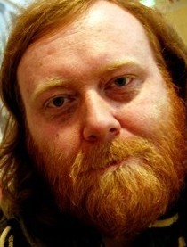
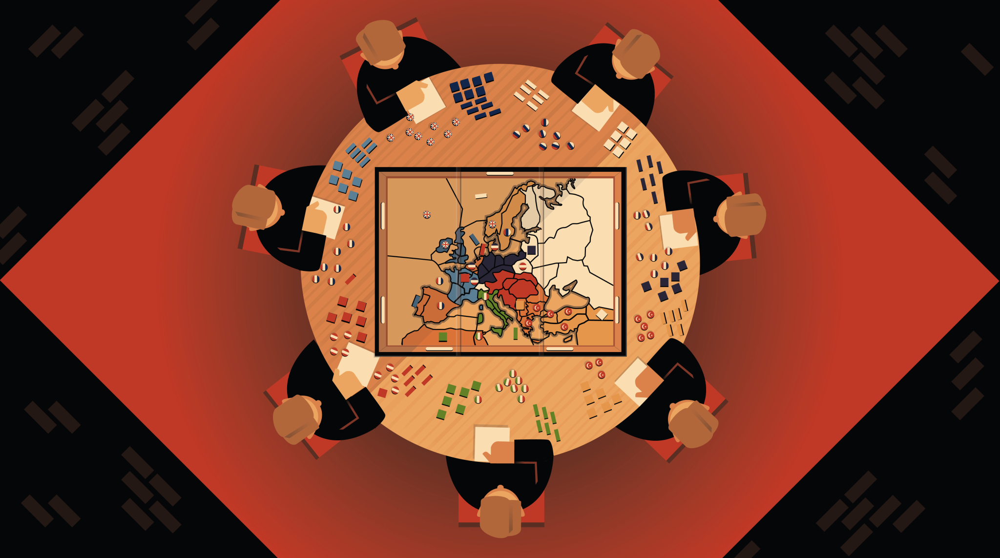

Nils is the project lead at Levande Video for this project, Björn the game expert. They have been so kind to grant the Zine the right to freely reproduce the content on their website in these pages. Björn is a champion in his own right, having been crowned as the Swedish champion in 2001 and the World Gunboat Champion in 2010. You can read his game review elsewhere in these pages. I recommend reading the opening section there to learn more about the power selection procedure and to learn where to download the game season maps from so as to follow along while watching. But wait to read the actual review until you saw the whole video.
Diplomacy is sometimes explained as similar to chess, although there are seven players battling each other and not only two. Diplomacy offers no mechanisms of luck but on the other hand a great deal of negotiations with the other players.
Since the negotiation and diplomacy can be private between different players you can never fully grasp the strategy of your opponents, which also means that you can never know when your opponents are telling the truth or when they are lying. When you least suspect it your back can be stabbed by several knives at once.
This setting offers a unique possibility for live streaming which, to the best of my knowledge, never has been done before. By putting a headmic on every player and by using several cameras on different locations we can follow the game from every angle and above all: we can listen in on the secret negotiations and promises from all of the players.
For this to become even more interesting we have asked seven of the top ranked players in Sweden to participate.
The players
Tommy Larsson
It’s a really hard line up to pick one favourite from, but if I had to pick one it would probably be Tommy Larsson. In the beginning of the 2000’s he did an amazing feat when he won both the 2003 and 2004 national championships and after a dip in 2005 (only 6th place) went back to win again in 2006. He has a silent diplomatic style that really gets inside your head. He hasn’t got as big international merits as some of the competitors but on home field he seems to be very hard to beat.
Leif Bergman(was replaced by Björn Sörling)

This is probably Sweden’s most internationally renowned player and a Diplomacy superstar in the late 90’s. Placing 2nd in two world championships (1996, and 1999) and following that up with winning the European Championship in 2000 is not a small feat by any measure. The only reason to not have him as the clear number one is that his merits now is from some time ago and it will be interesting to see what form he is in.
Tage Bengtsson
This is the most consistent player invited and I don’t think I’ve ever seen him playing a bad game. Not as big merits as some of the others, but a 2nd place in the national championships in 2008 is not the worst. His consistency also places him as 5th overall on the national ranking. According to himself he is the one player in Sweden that can keep alliances, although last time he told me, it was the move before he stabbed me, so I’m not so sure…
Dennis Andersson
The strategic wonder mind who has no fewer than 3 times gotten a medal in the Swedish National Championships. The 4th national medal he got in 2008 in the German Open National Championships, which might even be a bigger feat, since it featured not only the top German players, but also some top French diplomats. I will expect him to find unusual lines in the strategy as well as sometimes explaining to others why they need to go rogue.
Niclas Perez
If anyone could match Dennis in international experience it would be Niclas. Placing second in the European Championships in 2001 is only one of his great finishes. He has also won twice in the most prestigous English tournament (ManorCon) and taken a medal at the Irish open National Championship. Niclas is also the reigning Swedish national champion, taking home the title in 2009 which was the last held Swedish championship. He is probably the one with the most energetic diplomatic style and is pairing this with great knowledge about the game.
Emily Bache
This is the first of two people who have to be considered challengers to the more merited opponents. Born in England and playing Diplomacy in that scene long before moving to Sweden she does have the advantage of being the only natural English speaking participant. Her biggest merit was when she won the Swedish National Team Championship in 2000, in that team was also Tage but I have no doubt that being former team-mate with a Swede only will make them stab each other harder.
Peter Lund
Our second challenger who would certainly be a surprise winner of the tournament. That’s not saying he is without experience. He has played in both world, European and national championships but so far without the big finish. He has also been a pillar of the community for a long time and was only 3.1 points from making the final table at the last Swedish championship. And when I say he’s a challenger, he is still ranked 11th in the national ranking, which is saying quite a bit about the competition.
Björn Sörling(replacement)
Björn has been playing diplomacy for about 10 years but without any big results. He was probably for a long time the best Swedish diplomacy player who had never topped a board. That was changed the same morning as the invitational where he won the GothCon championship in a tough game featuring both a couple of new players but also the more internationally known Geoff Bache, husband of Emily.
The technical side of the project
To reach our goal with this project we use four cameras, headmics on all players, two commentators, graphics, a sound technician and a technical director to steer the project.

One camera is on a truss looking down on the game table. Two of the cameras are operated by photographers and placed on a dolly-tripod to cover the three designated diplomacy areas where the players can go to talk privately. The fourth camera covers the commentators.
The commentators guide the viewers through the game and also decide which conversation is the most interesting to follow at the moment. Viewers can interact with each other and the commentators through a chat box next to the live window.
Also, we record every camera and all of the seven players on separate tracks if anyone would like to dig in afterwards to find out what we might have missed.
We should also say that what is described above is our end game. We have the equipment and the technical experience to pull it off. However we are doing it all for free and some of our volunteers have no experience at all. This is kind of an experiment, however an experiment we would very much like to succeed and also to grow.
For those in the neighbourhood of Hvitfeldtska Gymnasiet in Gothenburg the 25:th of march, we provide a room where you can watch the show on big screen.
The game live-streamed
Commentary by Kirsi Höglund (anchor) and Björn Thalén (expert). The whole video, including the interview with the winner after the game, runs for close to 5 hours.
If you wish to e-mail feedback on this article to the author, and clicking
on the envelope above does not work for you, feel free to use the "Dear
DP..." mail interface.